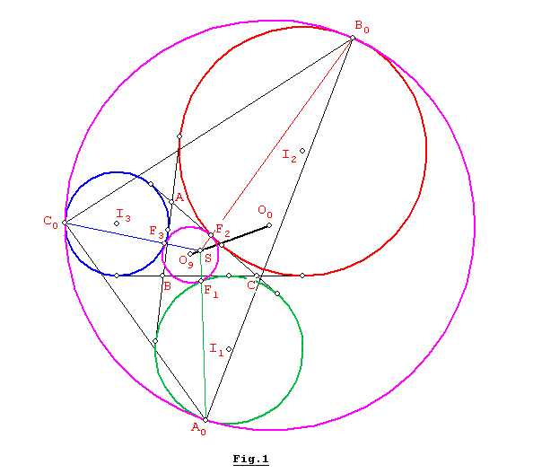
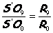
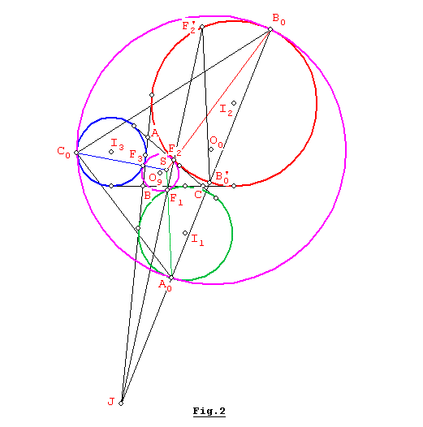
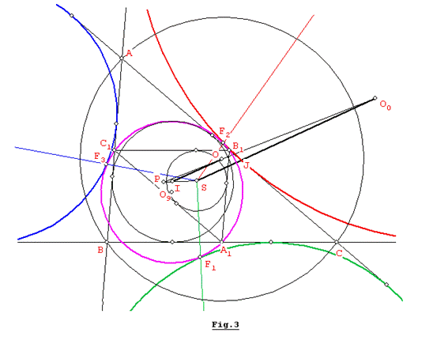
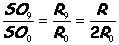
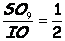
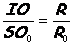
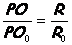
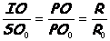
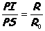

Problema 297: Demostrar
que P, S, I, son colineales, y que PI/PS = R/R0, donde:
P es el centro exterior de
semejanza de (O, R) y (O0, R0).
(O, R) es la circunferencia
circunscrita.
(O0, R0) es
la circunferencia de Apolonio tangente exterior a las tres circunferencias
exinscritas.
I es el incentro.
S es el punto de Spieker.
Salazar, J. C. (2006):
Comunicación personal.
Solución de Juan Carlos Salazar, profesor de Geometría del
Equipo Olímpico de Venezuela.(Puerto Ordaz ) (18 de febrero de 2006):
Para el
triángulo ABC, ver Fig. 1, conocemos que S el punto de Spieker, es el incentro
de su triángulo mediano A1B1C1 (donde A1,
B1, C1 son puntos medios de BC, CA, AB respectivamente,
sin dibujar) y también es el centro radical de los excírculos (I1),
(I2), (I3) opuestos a los vértices A, B, C
respectivamente.

Si
consideramos los puntos de tangencia A0, B0, C0
del círculo de Apolonio (O0,
R0) y los puntos de tangencia F1, F2, F3
del círculo de los nueve puntos (O9, R9) con los
excírculos (I1), (I2), (I3) respectivamente.
Tenemos que:
A0: centro de semejanza
externa de (I1) y (O0)
B0: centro de semejanza
externa de (I2) y (O0)
C0: centro de semejanza
externa de (I3) y (O0)
F1: centro de semejanza
interna de (I1) y (O9)
F2: centro de semejanza
interna de (I2) y (O9)
F3: centro de semejanza
interna de (I3) y (O9)
Luego, si
tomamos los excírculos (I1) e (I2) la recta F1F2
debe pasar por el centro semejanza externa (cse) de (I1) e (I2),
que denominaremos J = cse ((I1), (I2)). Esto como
consecuencia de aplicar el teorema de D’Alembert [1, Proposición 1]. Por el
mismo teorema, A0B0 pasará por J, también la recta AB, tangente
común externa de (I1) e (I2), al igual que la recta que
une sus centros I1I2, pasan por J, es decir que AB, F1F2,
I1I2, A0B0 concurren en J. De
manera similar BC, F2F3, I2I3, B0C0
concurren en K = cse ((I2), (I3)) y AC, F1F3,
I1I3, A0C0 concurren en L = cse ((I1),
(I3)).
A
continuación probaremos que A0F1, B0F2
y C0F3 concurren en el punto S (punto de Spieker).
Efectivamente, A0F1 debe pasar por el centro de semejanza
interna S’ de (O9) y (O0) por el teorema de D’Alembert.
Con el mismo razonamiento B0F2 y C0F3
pasarán también por el centro de semejanza interna S’ de (O9) y (O0),
es decir que S’, O9 y O0 son colineales y además tenemos
que: 

Ya
hemos probado la concurrencia y a continuación probaremos que el punto S’ es
también el centro radical de los excírculos (I1), (I2),
(I3). Tomando en consideración que AB, A0B0 y
F1F2 concurren en J, si F1F2 y A0B0
cortan al excírculo (I2) en los segundos puntos F’2 y B’0,
ver Fig. 2, luego F1A0
//F’2B’0 , entonces: <F2F’2B’0
= <F2B0B’0= <F2B0A0
= <JF1A0 =
<S’F1F2 , por lo tanto el cuadrilátero F1A0B0F2
es cíclico, o sea que :S’F1.S’A0 = S’F2.S’B0
y de manera similar tenemos: S’F2.S’B0 = S’F3.S’C0,
así tenemos que: S’F1.S’A0 = S’F2.S’B0 =
S’F3.S’C0, lo cual quiere decir que S’ es el centro
radical de los excírculos (I1), (I2), (I3). Concluimos
que S’ coincide con S, el punto de Spieker de ABC. Como consecuencia de lo
encontrado, no es difícil demostrar que la recta de Monge de los excírculos, es
el eje radical de los círculos (O9) y (O0) ya que contiene a los centros
de semejanza externos J, K, L. [1, Proposición 2]
En
otras palabras, la recta O0O9 (O0 S) es perpendicular
a la recta de Monge (eje radical) de los excírculos (I1), (I2),
(I3), ver Fig.3, donde ofrecemos un dibujo ampliado para ubicar los
puntos P, I, S, O involucrados en este problema.

Como
S es el incentro y O9 es el
cincuncentro del triángulo mediano A1B1C1, y
el triángulo mediano A1B1C1 es la imagen del
triángulo ABC por una homotecia de razón -1/2 y centro el baricentro de ABC,
luego la recta SO9 (O9O0) es imagen de la
recta IO por la misma homotecia, es decir son paralelas, por lo tanto IO//O9O0//SO0
y además se cumple: 
Por la
misma homotecia tenemos que  
En
nuestro caso, si P es el centro de semejanza externa de (O, R) y (O0,
R0) tenemos que:   
Nota:
Es interesante señalar que la recta IO es también perpendicular a la recta de
Monge de los excírculos del triángulo ABC, ya que IO// O9O0.
Referencias:
[1] “On mixtilinear
incircles and excircles”, Khoa Lu Nguyen and Juan Carlos Salazar,
FG200601, pag.1.
http://forumgeom.fau.edu/FG2006volume6/FG200601.pdf
Juan Carlos Salazar
caisersal@yahoo.com